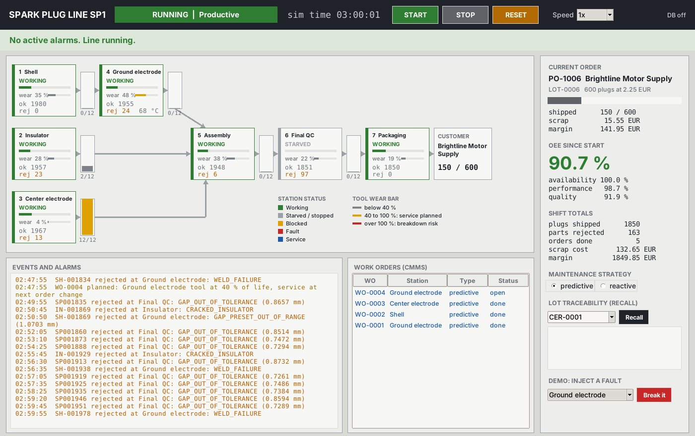

When and why a plug is defective
Every reject has a reason
Each station measures what it made. A failed check stores the reason code, the measured value and the scrap cost, for example a gap of 0.7261 mm at final QC, outside 0.80 ± 0.05 mm. Tool wear raises the defect rate, which links quality to maintenance and to money.
- Seven reason codes, from THREAD_OUT_OF_TOLERANCE to GAP_OUT_OF_TOLERANCE
- A defect found late costs more: 0.15 EUR at the electrode station, 1.10 EUR at final QC
- Every shipped plug is traceable to its material batches and its customer